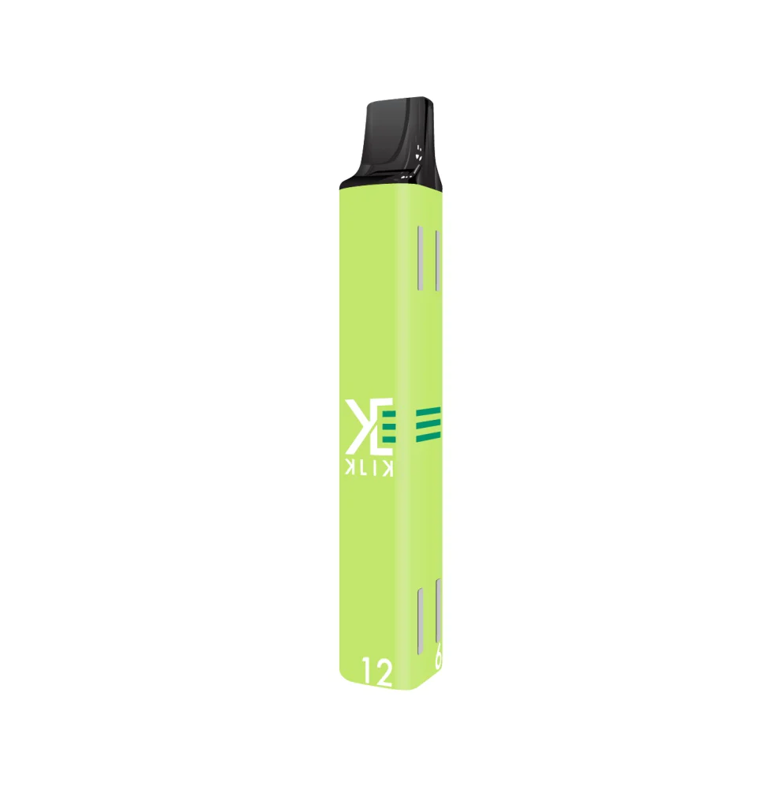
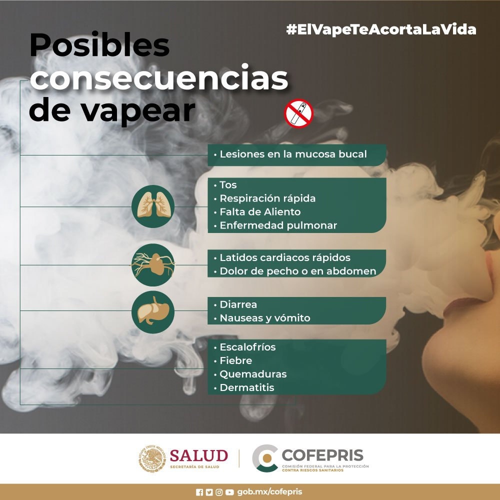

EL USO DEL VAPE EN LOS JÓVENES
Por: Mariana Liz Bernard Ojeda
Nuestra misión
"Nuestra misión es informar a los jóvenes sobre el vape y hacer intentos para parar su uso por completo"
¿Qué contiene el vape?
- nicotina
- saborizantes
- partículas ultrafinas que se inhalan
- compuestos orgánicos volátiles

¿Qué daños causa el vape?
- El termino vapor puede sonar inofensivo para las personas pero el aerosol del vape no es vapor y puede ser perjudicial. Este contiene nicotina y otras sustancias adictivas que pueden causar enfermedades pulmonales, enfermedades cardiácas y cáncer.
- También se han reportado varios casos donde el "vape" ha explotado en la cara de varios individuos y así causando heridas serias a los rostros de dichas personas.
¿Por qué la mayoría de los jóvenes usan vape?
- La mayoría de los jóvenes usan vape por las siguientes razones:
- Son llamativos. Las compañías que se encargan de construir vapes usan colores y diseños llamativos y creativos para que más jóvenes quieran uno. Al los jóvenes ver que es tan facil esconder un vape lo compran.
- Se ha vuelto una moda. Algunas compañías lo promueven en sus anuncios. Incluso hay famosos que al usar vape en su contenido y ser los favoritos de todos, los jóvenes los imitan.
- Por último, piensan que no hace daño. Debido a que los anuncios de este lo muestran como algo bueno, como un simple vapor con sabor o que es "mejor" que el cigarrillo, todos quieren uno.

¿Cómo podemos evitar que los jóvenes usen vapes?
Existe una infinidad de soluciones para este problema. Mi solución es la siguiente...
Dar charlas para orientar a los jóvenes desde una temprana edad en adelante para que aprendan los daños tan severos que nos causa el vape y evitar que más personas lo utilizen. También mostrarles como el internet manipula nuestra forma de pensar.
